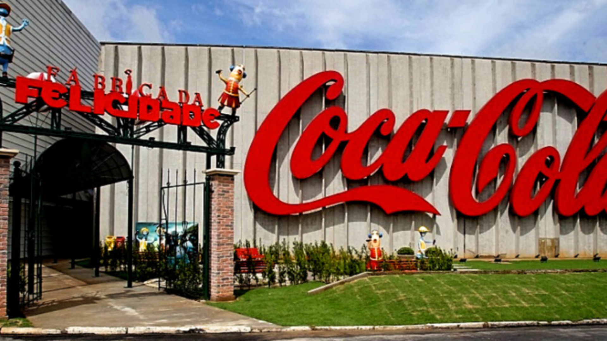

Coca-Cola
A Inova Mídia, especializada em web marketing, desempenhou um papel essencial no aumento das vendas da Coca-Cola ao intensificar a presença digital da marca. Por meio de campanhas publicitárias criativas nas redes sociais, a agência alcançou milhões de consumidores com conteúdos interativos, promoções exclusivas e vídeos virais que reforçavam a conexão emocional com o público. Além disso, a Inova liderou a formação de parcerias estratégicas com influenciadores e plataformas digitais, ampliando ainda mais o alcance das campanhas. Utilizando dados analíticos, a agência também personalizou as mensagens para diferentes segmentos de consumidores, garantindo maior engajamento e conversão. O resultado foi um crescimento significativo nas vendas e no fortalecimento da presença da Coca-Cola no ambiente digital.